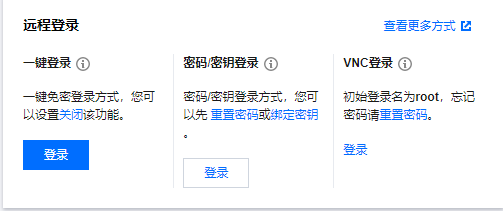

写在开头
搭建自己的博客网站是我大一时候的想法，大一下在朋友的帮助下搭了一个部署在Gitee上的博客。当时非常开心，兴奋的写了好几篇博客，然后分享给朋友用来装逼。但是过了没几个月，热情过去之后就什么就把这个事情忘记了。
其实花了这么长时间搭建博客，应该是要记录一些东西的，记录生活也好，记录自己学习到的东西也好。但是之前我只是把这个当作一个炫耀的工具，忘记了写博客最本质的东西。前几天突然在一个技术交流群里发现了帮助我搭博客的朋友发的文章，然后发现其实他一直在坚持更新博客，一下子感触颇多。感觉也想坚持着做一些事情，也给自己的一些经历做一些记录。
成为准研究生后，没有那么大的学业压力，每天枯燥的看论文实在受不了了，所以在工作站上重新搭了个博客，一边工作一边记录一下。这次是用腾讯云的轻量应用服务器来搭的博客，购买了一个最便宜的域名来搭的博客，比部署在Gitee上麻烦了很多，也增加了很多问题，但是用自己的域名搭建博客，感觉还是很不一样的哈哈。
前期准备
服务器
服务器我买的是腾讯云轻量应用服务器，几十块钱一年，比较便宜。本来是打算用这个整一个公众号的，没整出来，为了避免浪费就用来搭博客了。
使用服务器很多教程会推荐使用各种各样的工具，但我建议还是用他网页自带的就好了，远程登陆挺好用的。如果要使用root权限需要使用密码登录，重置一下密码就可以了。

域名
这也是我第一次买域名，第一次购买域名的话会有首年优惠，我买了一个“xxxx.cn”的域名，才29一年，比我想的便宜好多。当时只是第一年这样，第二年就39了，感觉也不算贵。
购买完域名后，不要急着绑定服务器，可以先备案再绑定，因为备案的时间周期很长，我觉得完全可以备案完再绑定。
当时我心急直接绑定了，结果网站因为没备案一直进不去，最后只能等备案完成后才能继续。
备案
域名买回来后，一般都是不能直接使用的，需要走备案流程。这个流程相当繁琐，需要填写各种各样的信息，准备身份证正反面照片、手持身份证照片balabala
有几个需要注意的点，一是通信地址需要注意写具体，我因为在学校直接填了学校，但是它需要你填到具体哪个宿舍或者别的地方，否则会被退回修改；第二个是网站的名字不能带姓名、博客、地点等关键字，长得像名字的假名也不行，比如“王十宇”就不行，“十宇”就可以；第三点是人脸视频核验，因为当时在手机上就可以核验，我就随便找了个地方拍的，但他的背景必须是白色背景，不是的话会需要重新拍。
我这里备案速度还是挺快的，但是实际上可能最长需要20天，所以还是建议备案完成前先不要绑定域名。
腾讯云初审后，会给你短信发一个链接，要在24小时内核验完成，需要注意接收短信。
管局备案完成后，会给你发一个邮箱告诉你备案完成了，并且告诉你一个类似”陕ICP备202300xxxx号-1“的网站备案号和“陕ICP备202300xxxx号”的主题备案好，然后你还需要在公安系统进行备案。
公安系统备案的时候，就需要填写你的备案号和主题备案号了，要注意这个流程需要在管局备案完成后的三十天内完成。